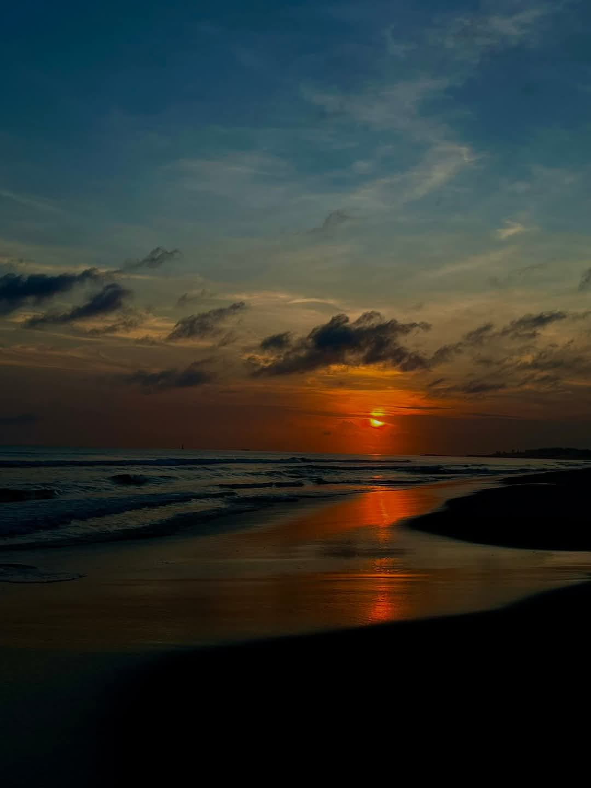
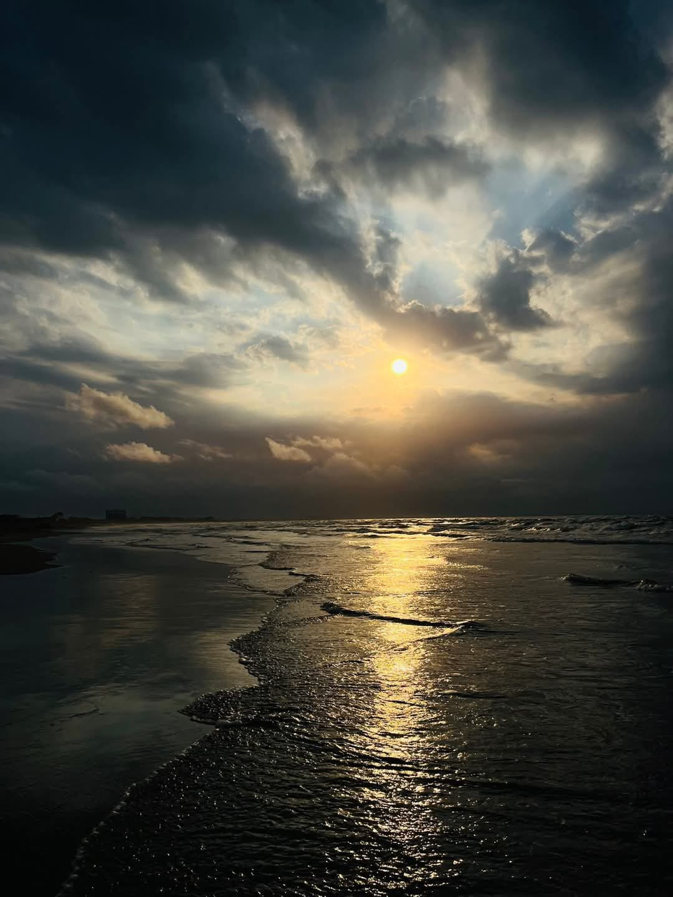
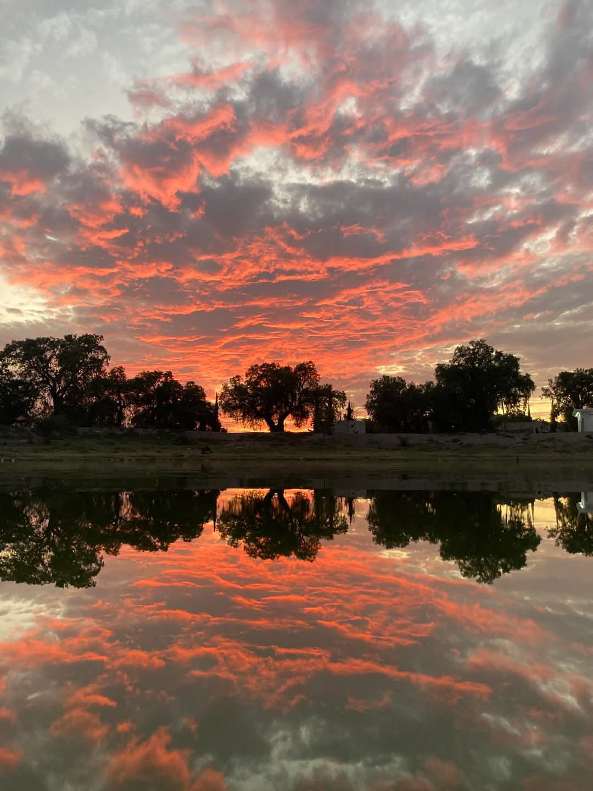

Rutas pensadas para enamorarte del destino
Cada imagen y cada título abre su página individual con botón de regreso al inicio.

Ruta del Milagro Eucarístico
Una experiencia espiritual y cultural por lugares emblemáticos de Tumaco.

Ruta de la Fe
Una travesía que conecta espiritualidad, tradición y paisajes inolvidables.

Andes y Pacífico sin fronteras
Rutas flexibles entre Tumaco, Pasto, Ipiales, Ibarra, Tulcán y más.
Conoce qué hacer en Tumaco
Playa, cultura, gastronomía y acompañamiento local en una experiencia organizada.
Profesionales, legales y locales
Haz tu reserva
Selecciona tu ruta, la fecha en calendario y déjanos tus datos.
Comparte tu experiencia
Información que ayuda al cliente a decidir
¿Qué llevar?
Ropa fresca, protector solar, gorra, hidratación y disposición para disfrutar.
¿Cuál es la mejor época para ir?
Tumaco se puede disfrutar en diferentes temporadas. La experiencia se ajusta según clima, marea y tipo de ruta.
¿Cómo se reserva?
Desde esta página puedes dejar tu reserva y luego continuamos la confirmación por atención directa.